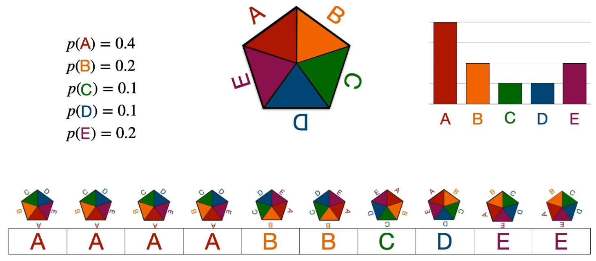
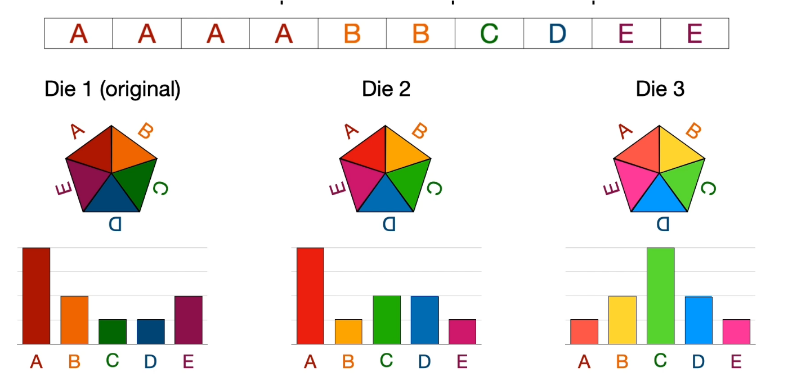
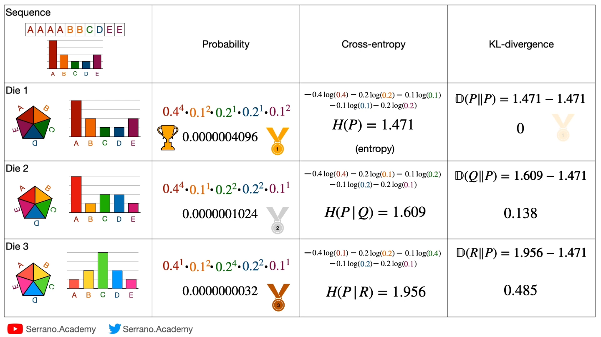

04. 교차엔트로피·KL과 PPL
학습 안내 · 이전: 신경망과 역전파 · 다음: 조건부확률과 베이즈
같은 관측 데이터를 여러 확률분포가 설명할 때 어느 분포가 더 잘 맞는지 비교해야 한다. 관측열의 확률을 높이는 일 → 평균 음의 로그확률을 낮추는 일 → 목표 분포와의 차이를 줄이는 일을 연결하는 도구가 교차엔트로피와 KL 발산이다. PPL은 같은 평균 손실을 지수 척도로 바꾼 값이다.
원문 54~61쪽을 다룬다. 확률의 합이 1이라는 점과 지수·로그를 알면 시작할 수 있다. 이 장의 목표는 10개 결과열로 세 후보를 비교하고, CE와 KL의 차이를 설명하고, 정답 확률에서 PPL을 구하는 것이다. 특별히 밝히지 않으면 로그는 자연로그 ln이며 단위는 nat이다.
1. 고정할 것은 관측 데이터다
원문에서 다섯 결과 A~E가 가능한 주사위 모형을 관측했다. 아래에서는 막대의 높이와 실제 결과열을 대응시켜 보자.

결과열은 A,A,A,A,B,B,C,D,E,E이다. A 4번, B 2번, C 1번, D 1번, E 2번으로 10개다. 각 횟수를 10으로 나눈 경험 분포를 p=(0.4,0.2,0.1,0.1,0.2)라 쓰자. 색과 오각형은 결과 범주를 구별한다. 실제 확률은 막대 높이와 옆의 수치에서 읽으며, 오각형 면적을 재서 구하는 것이 아니다.
이제 같은 결과열에 아래 세 후보를 적용한다. 어디에 높은 확률을 주는지가 어떻게 다른가?

| 후보 | A | B | C | D | E |
|---|---|---|---|---|---|
| Die1 | 0.4 | 0.2 | 0.1 | 0.1 | 0.2 |
| Die2 | 0.4 | 0.1 | 0.2 | 0.2 | 0.1 |
| Die3 | 0.1 | 0.2 | 0.4 | 0.2 | 0.1 |
Die2는 A 확률은 맞지만 B와 E를 낮추고 C와 D를 높인다. Die3는 가장 자주 나온 A보다 C에 큰 확률을 준다. 후보가 바뀌어도 경험 분포 p와 관측 횟수는 바꾸지 않는다. 같은 데이터로 비교해야 한다.
2. 확률의 곱에서 교차엔트로피로
이 주사위 모형은 각 시행이 독립이고 같은 분포 q에서 나온다고 가정한다. 따라서 특정 순서의 결과열 확률은 각 결과의 확률을 곱한 값이다. 예를 들어 Die2는 0.4⁴×0.1²×0.2×0.2×0.1²=0.0000001024다. 이 순서의 열을 계산하므로 순열 개수 계수를 곱하지 않는다. 단순히 같은 횟수가 나올 확률을 묻는 다른 질문에서는 경우의 수가 필요하다.
곱에 로그를 취하면 합이 되고, 음수를 붙인 뒤 10으로 나누면 비교하기 쉬운 평균 손실이 된다.
H(p,q) = -Σᵢ pᵢ ln qᵢ
= -(1/N) Σₜ ln q(관측 결과ₜ)
Die2: -[4ln0.4 + 2ln0.1 + ln0.2 + ln0.2 + 2ln0.1]/10
≈1.609438
H(p,q)가 **교차엔트로피(Cross Entropy, CE)**다. p는 각 결과를 얼마나 자주 고려할지 정하는 가중치이고 q는 모델이 그 결과에 부여한 확률이다. 부호를 반대로 했으므로 확률이 높은 관측열일수록 CE가 낮다. q를 바꾸면서 비교할 때는 p를 고정한다.
| 후보 | 특정 결과열 확률 | 평균 CE | 해석 |
|---|---|---|---|
| Die1 | 0.0000004096 | 1.470808 | 관측 빈도와 일치하며 세 후보 중 최소 |
| Die2 | 0.0000001024 | 1.609438 | Die1보다 열의 확률이 1/4 |
| Die3 | 0.0000000032 | 1.956012 | 흔한 A에 낮은 확률을 부여 |
Die1은 -[4ln0.4+2ln0.2+ln0.1+ln0.1+2ln0.2]/10으로 계산한다. Die3는 로그 안을 세 번째 후보로 바꾼다. 결과열의 로그확률은 각각 약 -14.70808, -16.09438, -19.56012다. 평균을 내지 않은 합과 평균 CE를 혼동하지 말자.
보충: 한 정답만 있는 경우. 정답이 A라면 목표 one-hot 분포는 (1,0,0,0,0)이고 CE는 -ln q(A) 하나로 줄어든다. q(A)=0.8이면 0.2231, q(A)=0.1이면 2.3026이다. 확신하며 틀리는 예측이 큰 벌점을 받는다. pᵢ>0인데 qᵢ=0이면 손실은 무한대다. pᵢ=0인 항은 극한 관례로 0으로 처리한다. 소프트웨어에서는 안정적인 로그 계산을 사용하지만 여기서는 수학적 식을 계산한다.
3. 엔트로피를 빼면 KL 발산이 남는다
엔트로피 H(p)=-Σpᵢln pᵢ는 목표 분포 자체의 불확실성이다. q=p일 때 교차엔트로피가 이 값과 같다. KL 발산은 목표 p를 모델 q로 설명할 때 추가되는 양이다.
KL(p||q) = Σᵢ pᵢ ln(pᵢ/qᵢ)
= H(p,q)-H(p)
H(p)=1.470808
Die1: 0
Die2: 1.609438-1.470808=0.138629
Die3: 1.956012-1.470808=0.485203
KL은 음수가 아니며 같은 분포일 때 0이다. 다만 일반적인 거리와 달리 KL(p||q)와 KL(q||p)는 같지 않다. 방향을 바꾸면 가중치와 로그의 비가 모두 바뀐다. 따라서 ‘두 분포 사이 거리’라는 직관은 대칭 거리라는 뜻으로 받아들이지 않는다. p가 고정이면 H(p)도 상수라 CE 최소화와 KL 최소화는 같은 최적화 목표를 갖는다.
아래 원문 표는 비교의 흐름을 보존하기 위한 자료다. 수정해야 할 표기 두 곳을 먼저 기억하자. 이 교재의 계산 기준은 위 식과 표다.

왼쪽에서 오른쪽으로 후보 → 결과열 확률 → CE → KL을 읽는다. 메달은 이 세 후보의 순위를 표현하며 모델 일반 성능을 측정한 자료는 아니다. 원문은 Die2·Die3 행의 KL을 D(Q||P), D(R||P)로 적었지만 그 옆 뺄셈은 **KL(P||Q), KL(P||R)**에 해당한다. 표에 사용된 H(P|Q)는 여기서는 교차엔트로피를 나타내지만 조건부 엔트로피와 혼동되므로 본문은 H(p,q)로 쓴다.
또 원문 Probability 열의 거듭제곱 인자에는 세 행 모두 오류가 있다. Die1 식 0.4⁴·0.1²·0.2¹·0.2¹·0.1²는 Die2의 확률을 만든다. Die2 식은 0.4⁴·0.1¹·0.2²·0.2¹·0.1¹, Die3 식은 0.4¹·0.1²·0.2⁴·0.2²·0.1¹로 표시되어 각각 관측 빈도와 확률의 배치가 맞지 않는다. A,B,C,D,E 순서로 올바르게 쓰면 다음과 같다.
Die1: 0.4⁴ × 0.2² × 0.1¹ × 0.1¹ × 0.2² = 0.0000004096
Die2: 0.4⁴ × 0.1² × 0.2¹ × 0.2¹ × 0.1² = 0.0000001024
Die3: 0.1⁴ × 0.2² × 0.4¹ × 0.2¹ × 0.1² = 0.0000000032
표에 표시된 세 최종 확률은 올바르지만 그 위 곱식과 일치하지 않는다. 수치 1.471 등을 먼저 반올림한 뒤 빼면 작은 차이가 생기므로 검산에서는 마지막에 반올림한다. 원문 그림 하단의 Serrano.Academy 출처 표시는 유지했다.
4. PPL은 평균 손실을 지수로 바꾼 척도다
언어모델에서는 각 위치의 정답 토큰 확률이 앞 문맥에 조건을 둔다. qₜ=P(정답 토큰ₜ|앞 토큰들)이라 하면:
평균 CE = -(1/N)Σₜ ln qₜ
PPL = exp(평균 CE) = (∏ₜ 1/qₜ)^(1/N)
이 곱은 언어 토큰이 무조건 독립이라는 가정이 아니다. 앞 문맥이 다른 조건부확률들을 연결한 것이다. 문맥 조건은 5장에서 설명한다. PPL은 정답 확률의 기하평균의 역수, 또는 정답 확률 역수들의 기하평균이다. 산술평균과 다르다.
원문 예시를 따라 q=(0.5,0.25,0.125)를 넣자. 역수는 2,4,8이고 곱은 64다. 세제곱근을 취하면 PPL=4다. 평균 CE는 (ln2+ln4+ln8)/3=ln4≈1.386294다. 이때 매 단계 실제 후보가 4개였다는 뜻은 아니다. 균등한 K개 후보에 확률 1/K를 부여하면 PPL이 정확히 K가 된다는 점에서 가져온 ‘유효 후보 수’ 비유다.
보충 활동: 두 정답 확률이 0.5, 0.25면 CE≈1.039721, PPL=√8≈2.828427이다. 역수의 산술평균 (2+4)/2=3과 다름을 확인하자. 정답 확률이 모두 1이면 PPL=1이고, 하나라도 0이면 유한한 평균 손실을 얻을 수 없다.
비교 조건: 같은 평가 데이터, 토크나이저, 평가 토큰의 포함·제외 기준, 제공하는 앞 문맥과 평균 방식을 맞춰야 PPL을 비교할 수 있다. 토큰화와 문맥 길이가 평가에 영향을 준다는 내용은 Hugging Face 공식 PPL 문서에서 확인했다(2026-11-09). 낮은 PPL은 그 조건에서 정답열에 더 높은 기하평균 확률을 주었다는 뜻이며 사실성·유용성 전체를 보증하지 않는다.
원문 표현의 조건 보완: 60쪽은 ‘아주 작은 CE 개선도 큰 PPL 변화’라고 설명한다. 정확한 관계는 PPL_new/PPL_old=exp(CE_new-CE_old)다. CE가 0.01 감소하면 PPL의 상대 감소는 약 0.995%로, 항상 극적인 변화는 아니다. 또 PPL=1은 평가된 정답을 확률 1로 준 극한 상태이지 모델의 모든 능력이 완벽하다는 뜻이 아니다. 61쪽의 균등분포는 고정된 후보 수에서 자기 엔트로피가 최대인 경우다. 잘못된 모델이 정답에 0에 가까운 확률을 주면 CE와 PPL은 그 균등 예측보다 더 나쁠 수 있다.
5. 확인 질문과 해설
- Die2를 평가할 때 A의 가중치를 0.4, B의 가중치를 0.1로 바꾸어도 되는가? (2절)
- p=q=(0.5,0.5)일 때 CE와 KL은 각각 얼마인가? (3절)
- 정답 확률 1/2,1/4,1/8에서 PPL은 왜 14/3이 아닌가? (4절)
- 정답에 0.001을 주는 이진 분류의 한 토큰 PPL은 2 이하인가? (4절)
- 두 모델의 토크나이저가 다르면 PPL 숫자만 보고 우열을 정할 수 있는가? (4절)
해설: 1은 안 된다. 목표 빈도는 (0.4,0.2,0.1,0.1,0.2)로 고정하고 로그 안 후보만 바꾼다. 2는 CE=ln2≈0.6931, KL=0이다. 목표 엔트로피를 빼기 전후의 차이다. 3은 기하평균이므로 (2×4×8)^(1/3)=4다. 4는 PPL=1000이다. 모델이 정답에 거의 확률을 주지 않으면 후보 수보다 클 수 있다. 5는 평가 단위가 달라지므로 단순 비교할 수 없다.
페이지별 상세 읽기
54 분포와 관측 · 55 세 후보 · 56 Die1 · 57 Die2 · 58 Die3 · 59 KL 정정 · 60 PPL 정의 · 61 기하평균